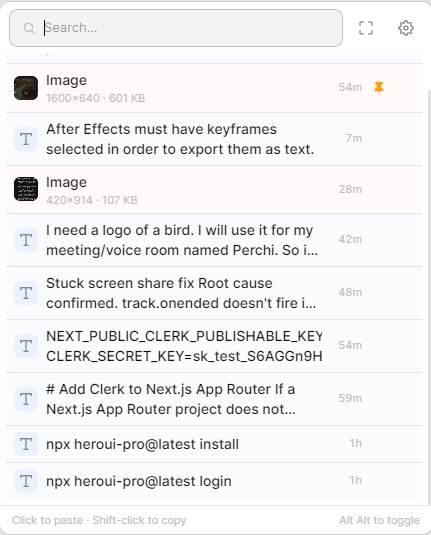

A local Windows command surface for copied text, images, links, files, folders, and apps. Double-tap Alt, type, then paste or open the result. No account, no cloud, no subscription.

The summon window stays compact, focuses search on open, and keeps Settings close for index health and rebuild controls.
How it works
Ctrl+C, right-click, drag and drop. mnml captures text, links, and images in the background without changing how you work.
The window opens by your cursor and focuses the search bar. Recent clips appear immediately, or type to search clips, files, folders, and apps.
Click a clipboard item to paste it into the active app. Click a file, folder, or app result to open it. Shift-click copies without pasting.
Settings includes a PC search dashboard with drive scope, counts, progress, errors, and a rebuild action when you want a clean index.
The details
Clipboard memory plus PC search.
Built around a local database, not live Windows Search delays.
Release notes
One installer for Windows 10 and 11. The link always points to the latest GitHub release.
Uninstall cleanly from Add or Remove Programs if it is not for you.
Looking for an older version or the source code? All releases on GitHub.
Legal
mnml stores your clipboard history and PC search index locally in SQLite databases on your machine. It does not collect, transmit, or share any data. There are no analytics, no crash reports, and no telemetry of any kind. Nothing leaves your computer.
mnml is open source software released under the MIT License. You are free to use, copy, modify, and distribute it. The full source is available on GitHub.
mnml is provided as-is, without warranty of any kind. The author is not responsible for any data loss or other issues arising from the use of this software. Use it at your own risk.